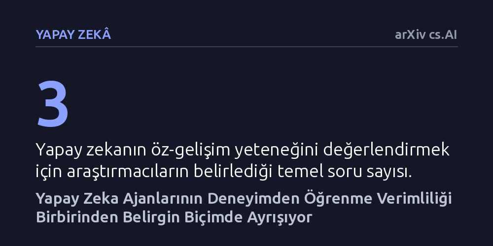

YAPAY-ZEKA · arXiv cs.AI · 2026-10-09
Çalışma, yapay zeka ajanlarının geçmiş deneyimlerden öğrenerek kendilerini ne kadar verimli geliştirdiğini ve yeni durumlara uyum sağlayabildiğini araştırıyor. Öncü modellerin öğrenme verimlilikleri arasında belirgin farklar bulunurken, nihai başarısı en yüksek olan ajanın her zaman en verimli öğrenen model olmadığı saptandı.
Bir yapay zekanın sadece anlık başarımına bakmak yanıltıcıdır; asıl belirleyici olan, modelin deneyimlerinden ders çıkararak kendini ne kadar verimli geliştirebildiğidir.

Günümüzde yapay zeka modelleri genellikle belirli bir anda dondurulmuş birer sınav öğrencisi gibi test ediliyor. Bir modele bir dizi soru ya da görev veriliyor, ne kadarını doğru yaptığına bakılarak sabit bir başarı puanı biçiliyor. Oysa gerçek dünyada görev alan otonom sistemlerin yalnızca mevcut bilgilerini sergilemesi yetmiyor; hata yaptıklarında bunu fark etmeleri, neden başarısız olduklarını anlamaları ve bir sonraki denemede aynı hataya düşmemeleri gerekiyor.
Mevcut değerlendirme yöntemleri yapay zekanın öğrenme kapasitesini ölçmekte yetersiz kalıyor. Bir ajanın geçmiş etkileşimlerinden ders çıkarıp çıkaramadığını, yeni bir kabiliyeti ne kadar hızlı edindiğini ve elde ettiği deneyimi genelleyip genelleyemediğini bilmeden modellerin gerçek potansiyelini anlamak mümkün olmuyor. Bu durum, yapay zekayı anlık bir fotoğraf üzerinden değil, zaman içindeki gelişim süreci üzerinden incelemeyi zorunlu kılıyor.
Araştırmacılar bu soruyu yanıtlamak amacıyla kontrollü bir deney ortamı kurguladı. Bu ortamda yapay zeka ajanlarının geçmişte karşılaştıkları başarısızlıklardan ve etkileşimlerden edindikleri bilgileri, gelecekteki örneklerin devralabileceği yeniden kullanılabilir çıktılara dönüştürmesi sağlandı. Böylece bir ajanın bir görevi çözerken tuttuğu notlar veya ürettiği stratejiler, sistemin sonraki versiyonlarına aktarıldı.
Çalışmada öğrenme süreci boyunca farklı kontrol noktaları belirlendi ve her aşamada modelin performansı iki ayrı eksende sınandı: eğitim sırasında gördüğü durumlar ve daha önce hiç karşılaşmadığı yeni senaryolar. Ayrıca öğrenmenin maliyeti de denkleme katılarak "ajan plastisitesi" adı verilen yeni bir kavram tanımlandı. Bu kavram, bir modelin harcadığı çaba ve deneyim miktarını gelecekteki başarısına ne kadar verimli dönüştürebildiğini ölçüyor.
Deney sonuçları, öncü modellerin öğrenme eğrilerinde belirgin farklılıklar olduğunu ortaya koydu. Eşit öğrenme ve deneyim fırsatı tanınmasına rağmen kimi modeller performanslarını belirgin ve kalıcı şekilde artırırken, kimi modeller başlangıç seviyelerinin civarında kaldı, hatta zaman zaman başlangıçtan daha geriye düştü. Üstelik eğitim ortamında elde edilen kazanımlar, modelin dağılım dışı yani tamamen yabancı koşullarla karşılaştığı durumlarda çoğu zaman yalnızca kısmen aktarılabildi.
En dikkat çekici bulgulardan biri de nihai başarı ile öğrenme verimliliği arasındaki kopukluk oldu. Testlerin sonunda en yüksek başarı puanına ulaşan model ile bu başarıyı en düşük maliyet ve en yüksek verimlilikle kazanan model aynı çıkmadı. Bu durum, yüksek kapasiteli bir modelin her zaman en iyi "öğrenci" olmadığını, deneyimi performansa çevirme konusunda farklı darboğazların devreye girdiğini gösterdi.
Başarısızlıkların nedenlerini inceleyen araştırmacılar iki farklı darboğaz tespit etti. Düşük plastisiteye sahip modeller, geçmişte üretilmiş faydalı strateji ve bilgileri tekrar kullanmayı bile başaramadı. Buna karşılık daha yüksek plastisiteye sahip modeller bu bilgileri devralıp kullansa bile yine de başarısız olabildi; bu da üretilen stratejilerin kalitesindeki eksikliklere, yeni durumlara uyarlanamamasına ya da yanlış uygulanmasına işaret etti.
Bu bulgular, yapay zeka değerlendirmelerinde köklü bir bakış açısı değişikliğine ihtiyaç olduğunu gösteriyor. Bir modeli sadece "şu anda ne biliyor" diye ölçmek yerine, "deneyim yoluyla ne kadar etkili gelişiyor" sorusunu sormak gerekiyor. Geleceğin otonom sistemlerini tasarlarken, modellerin ham bilgi gücünden ziyade hatalarından öğrenme çevikliğine odaklanmak belirleyici olacak.